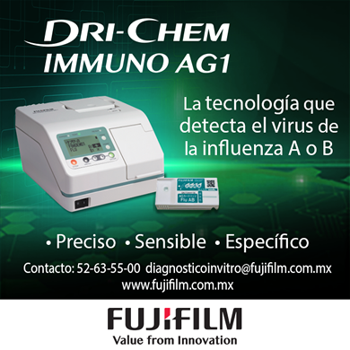
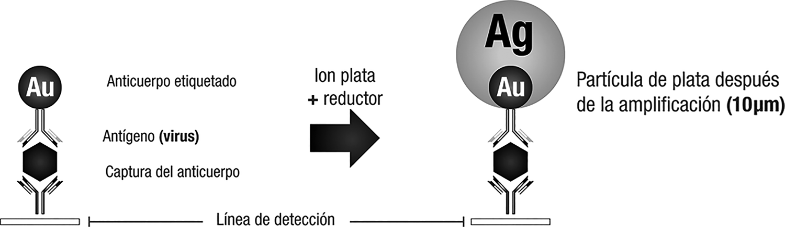
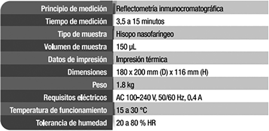

DRI-CHEM Inmuno AG1 
La tecnología que detecta el virus de la influenza A o B

Registro Sanitario: 0372E2016 SSA
DESCRIPCIÓN:
Es un analizador que detecta el virus de la influenza A y B por inmunocromatografía de alta sensibilidad reforzada con la tecnología por amplificación de plata.
CARACTERÍSTICAS:
• Equipo automático de análisis densitométrico.
• Reducción de falsos negativos.
• Resultados rápidos.
• Detección oportuna y automatizada.
• Especificidad si es influenza tipo A o B.
REDUCCIÓN DE FALSOS NEGATIVOS:
La tecnología de amplificación con plata mejora la sensibilidad de detección del virus evitando falsos negativos, al magnificar las partículas de oro coloidal empleadas en una inmunocromatografía convencional, para hacerlas 1,000 veces más visibles.


DATOS COMPLEMENTARIOS: En FUJIFILM de México queremos convertirnos en su mejor aliado, es por eso que estamos comprometidos con nuestros clientes y ofrecemos el mejor servicio posventa.
FUJIFILM DE MÉXICO, S.A. de C.V.
Teléfono: (55) 5263-5500
e-mail: diagnosticoinvitro@fujifilm.com.mx
www.fujifilm.com.mx